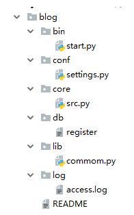

变量：静态路径。变量
代码分类：
加载快
可读性高
查询修改都简单
所有文件都在blog文件夹下

在bin文件夹下
项目启动文件。你的项目需要有专门的文件启动，而不是在你的核心逻辑部分进行启动的，有人对这个可能不太理解，我为什么还要设置一个单独的启动文件呢？你看你生活中使用的所有电器基本都一个单独的启动按钮，汽车，热水器，电视，等等等等，那么为什么他们会单独设置一个启动按钮，而不是在一堆线路板或者内部随便找一个地方开启呢？ 目的就是放在显眼的位置，方便开启。你想想你的项目这么多py文件，如果src文件也有很多，那么到底哪个文件启动整个项目，你还得一个一个去寻找，太麻烦了，这样我把它单独拿出来，就是方便开启整个项目。
import sys
import os
# sys.path.append(r'D:\lnh.python\py project\teaching_show\blog')
# print(os.path.dirname(__file__))
# 获取本文件的绝对路径 # D:/lnh.python/py project/teaching_show/blog/bin
# print(os.path.dirname(os.path.dirname(__file__)))
# 获取父级目录也就是blog的绝对路径 # D:/lnh.python/py project/teaching_show/blog
BATH_DIR = os.path.dirname(os.path.dirname(__file__))
sys.path.append(BATH_DIR)
from core.src import run
if __name__ == '__main__':
run() 在conf文件夹下
配置文件，就是放置一些项目中需要的静态参数，比如文件路径，数据库配置，软件的默认设置等等
在core文件夹下
这个文件主要存放的就是核心逻辑功能，你看你需要进行选择的这些核心功能函数，都应该放在这个文件中。
在db文件夹下
用户信息，数据相关，多个文件，这个文件文件名不固定，register只是我们项目中用到的注册表，但是这种文件就是存储数据的文件，类似于文本数据库，那么我们一些项目中的数据有的是从数据库中获取的，有些数据就是这种文本数据库中获取的，总之，你的项目中有时会遇到将一些数据存储在文件中，与程序交互的情况，所以我们要单独设置这样的文件。
在lib文件夹下
公共组件文件，这里面放置一些我们常用的公共组件函数，并不是我们核心逻辑的函数，而更像是服务于整个程序中的公用的插件，程序中需要即调用。比如我们程序中的装饰器auth，有些函数是需要这个装饰器认证的，但是有一些是不需要这个装饰器认证的，它既是何处需要何处调用即可。比如还有密码加密功能，序列化功能，日志功能等这些功能都可以放在这里。
在log文件夹下
记录用户的访问次数，转账，取钱，充钱等等，log文件顾名思义就是存储log日志的文件。日志我们一会就会讲到，日志主要是供开发人员使用。比如你项目中出现一些bug问题，比如开发人员对服务器做的一些操作都会记录到日志中，以便开发者浏览，查询。
这个我觉得是每个项目都应该有的一个文件，目的是能简要描述该项目的信息，让读者快速了解这个项目。
它需要说明以下几个事项:
我觉得有以上几点是比较好的一个README。在软件开发初期，由于开发过程中以上内容可能不明确或者发生变化，并不是一定要在一开始就将所有信息都补全。但是在项目完结的时候，是需要撰写这样的一个文档的。
可以参考Redis源码中Readme的写法，这里面简洁但是清晰的描述了Redis功能和源码结构。
原代码
status_dic = {
'username': None,
'status': False,
}
flag = True
REGISTER_PATH = r'F:\s24\day20\register'
def login():
i = 0
with open(REGISTER_PATH, encoding='utf-8') as f1:
dic = {i.strip().split('|')[0]: i.strip().split('|')[1] for i in f1}
while i < 3:
username = input('请输入用户名：').strip()
password = input('请输入密码：').strip()
if username in dic and dic[username] == password:
print('登录成功')
status_dic['username'] = username
status_dic['status'] = True
return True
else:
print('用户名密码错误，请重新登录')
i += 1
def register():
with open(REGISTER_PATH, encoding='utf-8') as f1:
dic = {i.strip().split('|')[0]: i.strip().split('|')[1] for i in f1}
while 1:
print('\033[1;45m 欢迎来到注册页面 \033[0m')
username = input('请输入用户名：').strip()
if not username.isalnum():
print('\033[1;31;0m 用户名有非法字符，请重新输入 \033[0m')
continue
if username in dic:
print('\033[1;31;0m 用户名已经存在，请重新输入 \033[0m')
continue
password = input('请输入密码：').strip()
if 6 <= len(password) <= 14:
with open(REGISTER_PATH, encoding='utf-8', mode='a') as f1:
f1.write(f'\n{username}|{password}')
status_dic['username'] = str(username)
status_dic['status'] = True
print('\033[1;32;0m 恭喜您，注册成功！已帮您成功登录~ \033[0m')
return True
else:
print('\033[1;31;0m 密码长度超出范围，请重新输入 \033[0m')
def auth(func):
def inner(*args, **kwargs):
if status_dic['status']:
ret = func(*args, **kwargs)
return ret
else:
print('\033[1;31;0m 请先进行登录 \033[0m')
if login():
ret = func(*args, **kwargs)
return ret
return inner
@auth
def article():
print(f'\033[1;32;0m 欢迎{status_dic["username"]}访问文章页面\033[0m')
@auth
def diary():
print(f'\033[1;32;0m 欢迎{status_dic["username"]}访问日记页面\033[0m')
@auth
def comment():
print(f'\033[1;32;0m 欢迎{status_dic["username"]}访问评论页面\033[0m')
@auth
def enshrine():
print(f'\033[1;32;0m 欢迎{status_dic["username"]}访问收藏页面\033[0m')
def login_out():
status_dic['username'] = None
status_dic['status'] = False
print('\033[1;32;0m 注销成功 \033[0m')
def exit_program():
global flag
flag = False
return flag
choice_dict = {
1: login,
2: register,
3: article,
4: diary,
5: comment,
6: enshrine,
7: login_out,
8: exit_program,
}
def run():
while flag:
print('''
欢迎来到博客园首页
1:请登录
2:请注册
3:文章页面
4:日记页面
5:评论页面
6:收藏页面
7:注销
8:退出程序''')
choice = input('请输入您选择的序号:').strip()
if choice.isdigit():
choice = int(choice)
if 0 < choice <= len(choice_dict):
choice_dict[choice]()
else:
print('\033[1;31;0m 您输入的超出范围，请重新输入 \033[0m')
else:
print('\033[1;31;0m 您您输入的选项有非法字符，请重新输入 \033[0m')# run() # 找不到名字
# 找到src.py文件的run名字
# from src import run
# run()
# sys.path 到底是什么?
# import time
# import t1
# import sys
# t1.func()
'''
sys模块内置模块,文件运行时,sys内置模块就会将一些模块 自动 加载到内存. 内置模块. time,json pickle等等.以及当前目录的.
如何引用到一个模块最本质的原因在于这个模块名称空间在不在内存.
如果直接引用不到一个模块,他必定不是内置或者当前目录下的py文件.
所以,我们要手动将其添加到内存.
sys.path.append()就是手动的将一些模块添加到内存,添加完毕之后,就可以直接引用了.
'''
# import sys
# # 版本二: 繁琐,我要将整个项目作为根目录,添加到内存中.
# sys.path.append(r'F:\s24\day20\模拟博客园代码\blog\core')
# sys.path.append(r'F:\s24\day20\模拟博客园代码\blog\conf')
# sys.path.append(r'F:\s24\day20\模拟博客园代码\blog\db')
# from src import run
# run()
# 版本三: 你把项目路径写死了,所有的开发人员如果共同开发这个项目,必须都得按照这个目录结构去构建.
# import sys
# sys.path.append(r'F:\s24\day20\模拟博客园代码\blog')
# from core.src import run
# run()
# 版本四:
import sys
import os
# print(__file__)
# print(os.path.dirname(os.path.dirname(__file__)))
# sys.path.append(r'F:\s24\day20\模拟博客园代码\blog')
# from core.src import run
# run()
BASE_PATH = os.path.dirname(os.path.dirname(__file__))
sys.path.append(BASE_PATH)
from core.src import run
if __name__ == '__main__':
run()import sys
import os
BASE_PATH = os.path.dirname(os.path.dirname(__file__))
REGISTER_PATH = os.path.join(BASE_PATH, 'db', 'register')from conf import settings
from lib import common
status_dic = {
'username': None,
'status': False,
}
flag = True
def login():
i = 0
with open(settings.REGISTER_PATH, encoding='utf-8') as f1:
dic = {i.strip().split('|')[0]: i.strip().split('|')[1] for i in f1}
while i < 3:
username = input('请输入用户名：').strip()
password = input('请输入密码：').strip()
if username in dic and dic[username] == password:
print('登录成功')
status_dic['username'] = username
status_dic['status'] = True
return True
else:
print('用户名密码错误，请重新登录')
i += 1
def register():
with open(settings.REGISTER_PATH, encoding='utf-8') as f1:
dic = {i.strip().split('|')[0]: i.strip().split('|')[1] for i in f1}
while 1:
print('\033[1;45m 欢迎来到注册页面 \033[0m')
username = input('请输入用户名：').strip()
if not username.isalnum():
print('\033[1;31;0m 用户名有非法字符，请重新输入 \033[0m')
continue
if username in dic:
print('\033[1;31;0m 用户名已经存在，请重新输入 \033[0m')
continue
password = input('请输入密码：').strip()
if 6 <= len(password) <= 14:
with open(settings.REGISTER_PATH, encoding='utf-8', mode='a') as f1:
f1.write(f'\n{username}|{password}')
status_dic['username'] = str(username)
status_dic['status'] = True
print('\033[1;32;0m 恭喜您，注册成功！已帮您成功登录~ \033[0m')
return True
else:
print('\033[1;31;0m 密码长度超出范围，请重新输入 \033[0m')
@common.auth
def article():
print(f'\033[1;32;0m 欢迎{status_dic["username"]}访问文章页面\033[0m')
@common.auth
def diary():
print(f'\033[1;32;0m 欢迎{status_dic["username"]}访问日记页面\033[0m')
@common.auth
def comment():
print(f'\033[1;32;0m 欢迎{status_dic["username"]}访问评论页面\033[0m')
@common.auth
def enshrine():
print(f'\033[1;32;0m 欢迎{status_dic["username"]}访问收藏页面\033[0m')
def login_out():
status_dic['username'] = None
status_dic['status'] = False
print('\033[1;32;0m 注销成功 \033[0m')
def exit_program():
global flag
flag = False
return flag
choice_dict = {
1: login,
2: register,
3: article,
4: diary,
5: comment,
6: enshrine,
7: login_out,
8: exit_program,
}
def run():
while flag:
print('''
欢迎来到博客园首页
1:请登录
2:请注册
3:文章页面
4:日记页面
5:评论页面
6:收藏页面
7:注销
8:退出程序''')
choice = input('请输入您选择的序号:').strip()
if choice.isdigit():
choice = int(choice)
if 0 < choice <= len(choice_dict):
choice_dict[choice]()
else:
print('\033[1;31;0m 您输入的超出范围，请重新输入 \033[0m')
else:
print('\033[1;31;0m 您您输入的选项有非法字符，请重新输入 \033[0m')liye|liyedsb
meet|baoyuandsb说明书